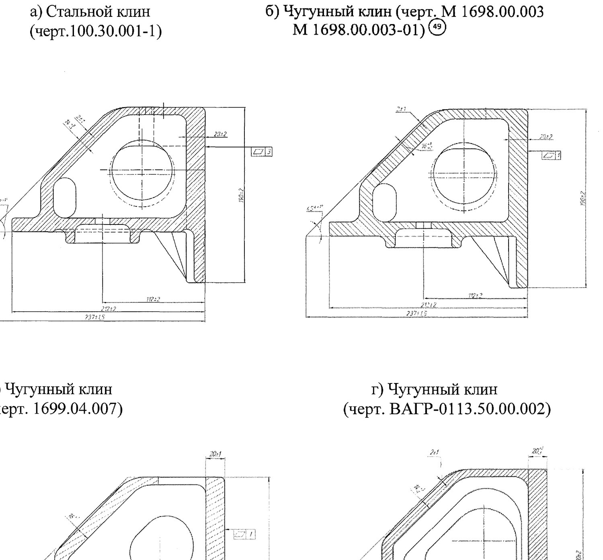
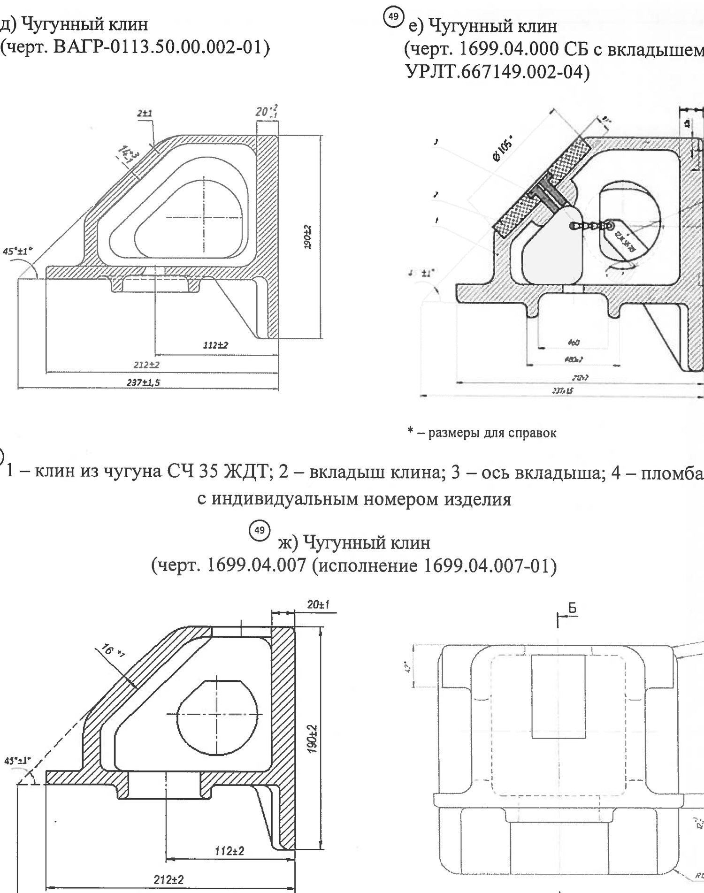
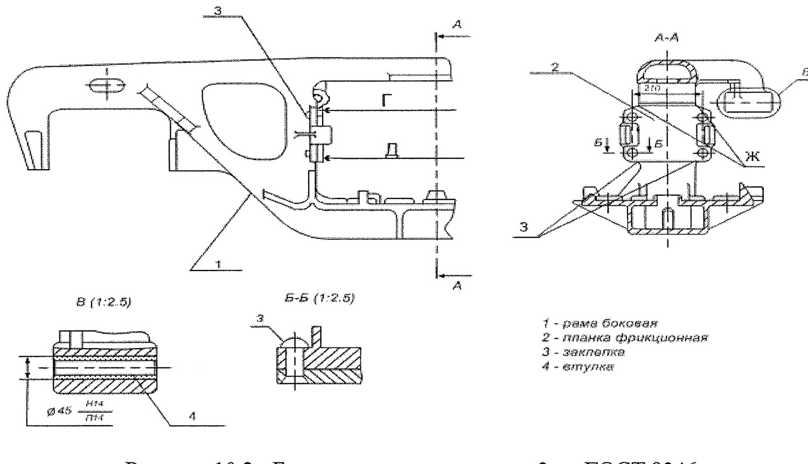

«Pona – friksion planka» uzelini ta'mirlash
10-bo'lim: pona turlari va chizmalari, qaysi holatda almashtiriladi, plankalarni klepka qilish, zaklepkalar va o'lchamlar.
Uzel nimadan iborat (10.1-band)
Aravachaning tebranish so'ndirgichi uzeli uchta elementdan iborat: tarkibiy friksion planka, friksion pona va nadressor balkasining qiya yuzasi. Qiya yuzani ta'mirlash 15-darslikda ko'rib chiqilgan edi (052-2009 ning 9-bo'limi), bu darslikda qolgan ikkitasi ko'rib chiqiladi.
Friksion pona turlari (10.1.2 va 10.2-bandlar)


| Ta'mir turi | Qanday pona o'rnatiladi |
|---|---|
| Depo ta'miri (ДР) | СЧ 35 cho'yanidan pona: М 1698.00.003, М 1698.00.003-01, 1699.04.007, ВАГР-0113.50.00.002-01, ЧМН-35М cho'yanidan ВАГР-0113.50.00.002, СЧ 35 ЖДТ dan 1699.04.000 СБ |
| ДР — 18-100 modeli uchun | Faqat СЧ 35 cho'yanidan М 1698.00.003 yoki М 1698.00.003-01 |
| Kapital ta'mir (КР) | Vagondagi ponalar YANGI cho'yan ponalarga almashtiriladi |
| КР — 18-100 modeli uchun | СЧ 35 cho'yanidan М 1698.00.003, М 1698.00.003-01 |
Uchta qat'iy taqiq (10.1.2-band):
- Po'lat friksion ponalarni ta'mirlash taqiqlanadi — ular faqat almashtiriladi;
- Bitta vagon ostidagi aravachalarga po'lat va cho'yan ponalarni birga o'rnatish taqiqlanadi;
- С 03.04 loyihasi bo'yicha friksion pona faqat С 03.04 loyihasidagi friksion planka bilan juft holda o'rnatiladi.
Ponani almashtirmasdan qoldirish (10.3-band)
Depo ta'mirida sisternalardan tashqari barcha turdagi yuk vagonlariga cho'yan ponalarni o'rnatishga yoki po'lat ponalarni almashtirmasdan qoldirishga ruxsat beriladi — quyidagi shartlar bilan:
| Shart | Qiymat |
|---|---|
| Qiya va vertikal tekisliklarning umumiy yeyilishi | 3 mm gacha |
| Bir tomondan yeyilish | 2 mm dan ko'p emas |
| Boshqa nuqsonlar (yoriq, uchish) | Bo'lmasligi kerak |
| Ponaning qattiqlik qovurg'alaridagi yoriqlar | Ruxsat etilmaydi |
Friksion plankalarni almashtirish (10.4–10.5-bandlar)
Kapital ta'mirda friksion plankalar yangi tarkibiy plankalarga almashtiriladi: М 1698 ПКБ ЦВ loyihasi bo'yicha, yoki ТУ BY 400044052.011-2014 bo'yicha, yoki С 03.04 loyihasi bo'yicha, yoki 1699.00.000 bo'yicha. 18-100 modeli uchun — М 1698 ПКБ ЦВ loyihasi bo'yicha yangi tarkibiy plankalar.
Depo ta'mirida yoriq, uchish va me'yordan ortiq yeyilishi bo'lgan plankalar yangisiga almashtiriladi. Sisternalardan tashqari barcha turdagi yuk vagonlariga quyidagilarni qoldirishga ruxsat beriladi:
| Planka turi | Ruxsat etilgan yeyilish |
|---|---|
| Qo'zg'almas planka М 1698 ПКБ ЦВ, qalinligi 10 mm | Harakatlanuvchi planka bilan ta'sirlashuvchi yuzada 1,5 mm |
| Harakatlanuvchi plankalar — qalinlik bo'yicha umumiy | 2 mm gacha, lekin bir tomondan 1,5 mm dan ko'p emas |
Plankalar orasidagi o'lchamlar (10.6-band)

| Parametr | Qiymat |
|---|---|
| «Г» — planka qalinligi 10 mm | 642 mm dan kam emas |
| «Г» — planka qalinligi 16 mm | 630 mm dan kam emas |
| «Г» va «Д» o'lchamlari farqi («Ж» va «З» nuqtalarida) | 3 mm dan ko'p emas |
| «Е» o'lchami | «Г» va «Д» o'lchamlarining yarim farqi bilan aniqlanadi |
| 18-100, planka 10 mm, ramalar 2001-yildan keyin: ДР / КР | 648 (+2,0/−3,6) / 648 (+1,6/−3,6) mm |
| 18-100, ramalar 2001-yilgacha: ДР / КР | 648 (+2,0/−6,6) / 648 (+1,6/−6,6) mm |
Maydonchalarga zaklepkalangan plankalar ularga zich yotishi kerak. Ruxsat etiladi: zaklepkalar oralig'ida mahalliy zichmaslik 1 mm dan ko'p emas (18-100 uchun 0,5 mm); zaklepka boshi zonasida bosh aylanasining 1/3 qismida mahalliy zazor — 1 mm li shchup zaklepka sterjeniga yetmasligi kerak (18-100 uchun 0,5 mm); zaklepka boshining planka tekisligiga cho'kishi 2 mm dan ko'p emas.
Klepka ishlariga tayyorgarlik (10.7-band)
- Yon ramaning friksion planka yuzasiga tegib turadigan qismini shlifovka mashinasi bilan tozalashga ruxsat beriladi — plankaning privalochniy yuzaga zich yotishini ta'minlash uchun.
- Ishlangan yuza Ra 12,5 ga mos bo'lishi kerak.
- Har bir privalochniy yuzaning pastki qismidagi kengayish 2 dan 5 mm gacha bo'lishi shart.
- Yuqori qismdagi proyom o'lchami 668 (−3) mm bo'lishi kerak.
Zaklepkalar (10.8-band)
| Parametr | Talab |
|---|---|
| Yon ramadagi teshik diametri | Ø 21 (+0,84) mm |
| Zaklepka turi | Botiq (potaynoy) kallakli, diametri 20 mm, ГОСТ 10300 |
| Issiq klepka kuchi | 25 tk dan kam emas |
| Zaklepkani qizdirish harorati | 1050…1100 °C |
| Qizdirish usuli | Ko'mir, gaz yoki elektr pechlarida, yoki induksion isitgichlarda |
Zaklepkalar bo'shashganda (10.9-band)
Bitta yoki bir nechta bo'shashgan zaklepkasi bor qo'zg'almas friksion plankalar qayta klepkalanadi.
Nazorat savollari
Avval o'zingiz javob bering, so'ngra tekshiring.
1. «Pona – friksion planka» uzeli nechta elementdan iborat?
2. Po'lat friksion ponani ta'mirlash mumkinmi?
3. Bitta vagon ostidagi aravachalarga po'lat va cho'yan ponalarni birga o'rnatish mumkinmi?
4. Zaklepkani qizdirish harorati va klepka kuchi qanday bo'lishi kerak?
5. Bo'shashgan zaklepkalar bilan nima qilinadi?
6. Friksion plankalar vertikal tekislikda parallel bo'lishi kerakmi?
Manba: РД 32 ЦВ 052-2009 — ГОСТ 9246-2013 bo'yicha zazorli yon skolzunli tip 2 yuk vagon aravachalarini ta'mirlash. Umumiy ta'mir rahbariyati (2026-yil 1-iyuldan amaldagi tahrir).
Andijon vagon deposi · telejka ta'mirlash sexi.